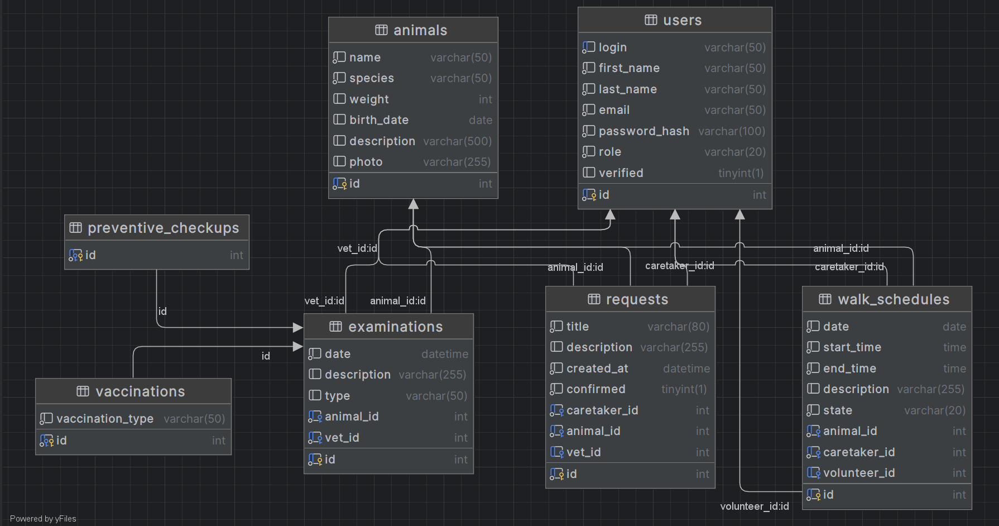

Zvířecí útulek
- Autoři
- Igor Mikula
xmikul74@stud.fit.vutbr.cz -
Návrh schéma relačnej databázy. Back end a front end implementácia zodpovedností administrátora a veterinára. Testovanie.
- Aurel Strigáč
xstrig00@stud.fit.vutbr.cz -
Návrh schéma relačnej databázy. Back end a front end implementácia zodpovedností dobrovolníka a neregistrovaného užívateľa. Testovanie.
- Daniel Putiš
xputis00@stud.fit.vutbr.cz -
Návrh schéma relačnej databázy. Back end a front end implementácia zodpovedností pečovateľa. Testovanie.
- URL aplikace
- http://www.stud.fit.vutbr.cz/~xautor01/IIS TODO
- (pokud má aplikace více vstupních stránek, napište obdobně další URL)
Uživatelé systému pro testování
| Login | Heslo | Role |
|---|
| admin1 | 1234 | Administrátor |
| vet1 | 1234 | Veterinár |
| caretaker1 | 1234 | Pečovatel |
| volunteer1 | 1234 | Dobrovolník |
(Diagram prípadov použitia nebol vložený, keďže IS implementuje role a prípady použitia definované zadáním.)
Video
Odkaz na video demonštrujúce použitie informačného systému.
Implementace
Táto sekcia obsahuje stručný popis najdôležitejších súborov/častí aplikácie.
- routes.py
Tento súbor je umiestnený v koreňovom adresári aplikácie.
Implementuje logiku spracovávania HTTP požiadavkov, resp. obsahuje logiku spracovávania všetkách prípadov užitia
a zaobstaráva presmerovávanie na požadované stránky.
- app.py
Súbor je umiestnený v koreňovom adresári aplikácie a slúži ako hlavný vstupný bod pre Flask aplikáciu.
Inicializuje Flask aplikáciu, nastavuje konfiguráciu pre pripojenie k MySQL databáze pomocou SQLAlchemy.
Inicializuje rozšírenia ako SQLAlchemy, bcrypt a login_manager pre správu databázy, hesiel a autentifikácie užívateľov.
Registruje blueprinty pre routovanie a API endpointy, vytvára databázové tabuľky a inicializuje počiatočné dáta pomocou seed skriptu.
Zabezpečuje správu užívateľských session, vrátane nastavenia časových limitov a aktualizácie poslednej aktivity.
Taktiež pridáva hlavičky na kontrolu cache pre všetky HTTP odpovede, čím zabezpečuje aktuálnosť dát na stránkach.
- models/
Priečinok obsahuje implemenetáciu databázových modelov (entít)
- forms/
Obsahuje súbory s implemetáciou formulárov pre jednotlivé databázové modely a takisto prihlasovanie a registráciu užívateľa.
Formuláre zaručujú pomocou validátorov, že zadané dáta budú zapísané v správnom formáte a nedôjde teda k nekonzistenciám a porušeniu integrity v databáze
- api/
V priečinku api sú implementované funkcie pracujúce s databázou nad jednotlivými modelmi, ktoré sú využívané v súbore routes.py.
Typicky tieto funkcie umožňujú získanie jednoho/všetkých inštancií modelu, vymazanie, editovanie a filtrovanie medzi inštanciami.
- templates/
Obsahuje podpriečinky pomenované na základe možných rolí užívateľa.
V týchto podpriečinkoch sú implementované HTML súbory, reprezentujúce stránky, ktoré je aplikácia schopná zobrazovať.
Pre štylizáciu stránok je využitý framework Bootstrap, verzie 4.5.
Pre zabezpečenie dynamickosti stránok a vyriešenie logických implikácii v HTML súboroch je využitý framework Jinja.
Databáze

Instalace
Softwarové požiadavky
1. Vytvorenie a inštalácia virtuálneho prostredia:
python3 -m venv venv
source venv/bin/activate (pre linux)
V prípade nepoužitia virtuálneho prostreda je potrebné sa uistiť, že je možné používať nástroj pip
Príklad inštalácie nástroja pip na Ubuntu:
sudo apt install python3-pip
2. Zoznam softwarových balíkov potrebných pre spustenie je uvedený v súbore requirements.txt,
ktorý bol vygenerovaný pomocou pip freeze > requirements.
Tieto balíky je možné nainštalovať pomocou:
pip install -r requirements.txt.
Celkový proces je spustenia projektu je takisto popísaný v README.md
Inicializácia a konfigurácia databázy pri lokálnom spúšťaní
Je potreba mať nainštalovaný MySQL server. Pre inicializáciu a vytvorenie MySQL databáze sú vytvorené skripty:
-
create_db.py vytvorí na localhost inštanciu databáze s názvom animal_shelter
Skript po spustení žiada o vloženie prihlasovacích údajov (mena a hesla) od Vášho MySQL.
-
seed.py vytvorí tabuľky na základe obsahu priečinka models a vloží do nich prednastavené dáta.
Tento skript je volaný pri spustení hlavného súboru app.py, preto nie je potreba ho spúšťať samostatne.
Po spustení app.py je potrebné opätovné zadanie prihlasovacích údajov od MySQL.
Postup inicializácie:
python3 create_db.py
Enter your MySQL username: root
Enter your MySQL password: your_password
python3 app.py
Enter your MySQL username: root
Enter your MySQL password: your_password
Deploynutá aplikácia
Pre hostovanie databázy aj deploy aplikácie bol využitý Google Cloud.
Súbor, ktorým je deployment riadený je app.yaml, využívajúci nástroj gunicorn. Tento súbor možno nájsť v koreňovom adresári odovzdaného riešenia.
Deploynutú on-line aplikáciu možno nájsť tu
.
Známé problémy